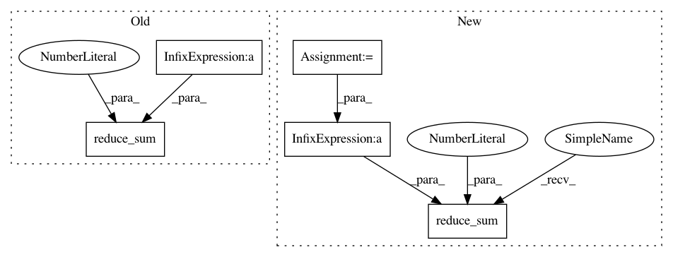

7c8af7a941f49539f2d5eb1b17d61952fc70e2bc,niftynet/layer/resampler.py,ResamplerLayer,_resample_inv_dst_weighting,#ResamplerLayer#,171
Before Change
b_id = tf.concat([b_id, knots_id], axis=-1)
samples = tf.gather_nd(inputs, b_id) // output 8, 2, 2, n_channels
samples = tf.reduce_sum(
samples * tf.expand_dims(point_weights, axis=-1), axis=0)
samples = samples / tf.reduce_sum(point_weights, axis=0)
return samples
After Change
point_weights = tf.pow(point_weights, self.power / 2.0)
point_weights = tf.reciprocal(point_weights)
// workaround for zero weights
point_weights = tf.minimum(point_weights, 1e12)
// transpose to shape inds: [0, -1, others]
all_coords = tf.transpose(
all_coords, [0, len(out_size)] + range(1, len(out_size)))
knots_id = tf.gather_nd(all_coords, weight_id)
knots_id = tf.transpose(
knots_id, [0] + range(2, out_spatial_rank + 3) + [1])
knots_shape = knots_id.get_shape().as_list()
b_id = tf.reshape(
tf.range(batch_size),
[1] + [batch_size] + [1] * (len(knots_shape) - 2))
b_id = tf.tile(
b_id, [knots_shape[0]] + [1] + out_spatial_size + [1])
b_id = tf.concat([b_id, knots_id], axis=-1)
point_weights = tf.expand_dims(point_weights, axis=-1)
samples = tf.gather_nd(inputs, b_id)
samples = tf.reduce_sum(samples * point_weights, axis=0)
samples = samples / tf.reduce_sum(point_weights, axis=0)
return samples
In pattern: SUPERPATTERN
Frequency: 3
Non-data size: 5
Instances
Project Name: NifTK/NiftyNet
Commit Name: 7c8af7a941f49539f2d5eb1b17d61952fc70e2bc
Time: 2017-10-24
Author: wenqi.li@ucl.ac.uk
File Name: niftynet/layer/resampler.py
Class Name: ResamplerLayer
Method Name: _resample_inv_dst_weighting
Project Name: NifTK/NiftyNet
Commit Name: 7d9d506e77585e5600b45dc41da1a731a4b30722
Time: 2017-04-27
Author: z.eaton-rosen@ucl.ac.uk
File Name: nn/loss.py
Class Name:
Method Name: sensitivity_specificity_loss
Project Name: NifTK/NiftyNet
Commit Name: a5bbb62a21541b9ed9586fbd891a820de8e52fc6
Time: 2017-10-28
Author: wenqi.li@ucl.ac.uk
File Name: niftynet/layer/resampler.py
Class Name: ResamplerLayer
Method Name: _resample_inv_dst_weighting